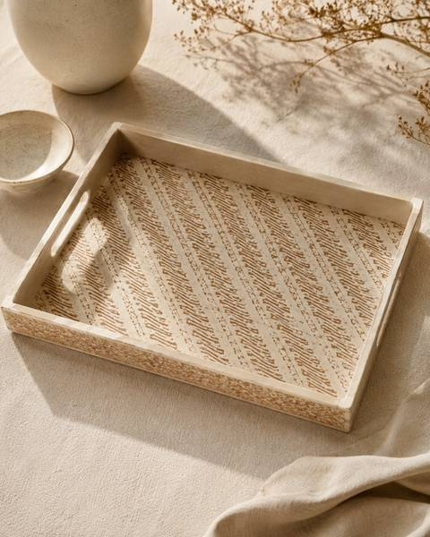
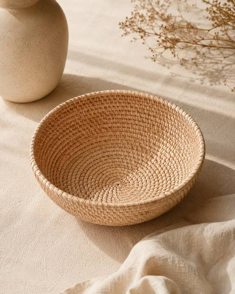
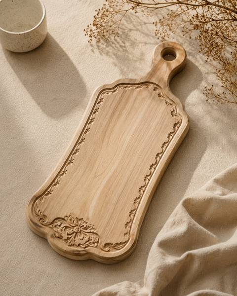
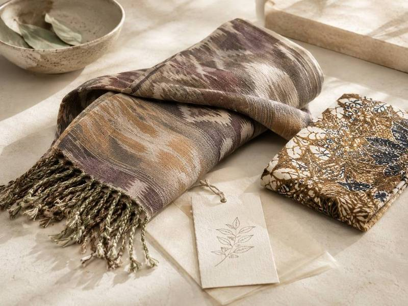
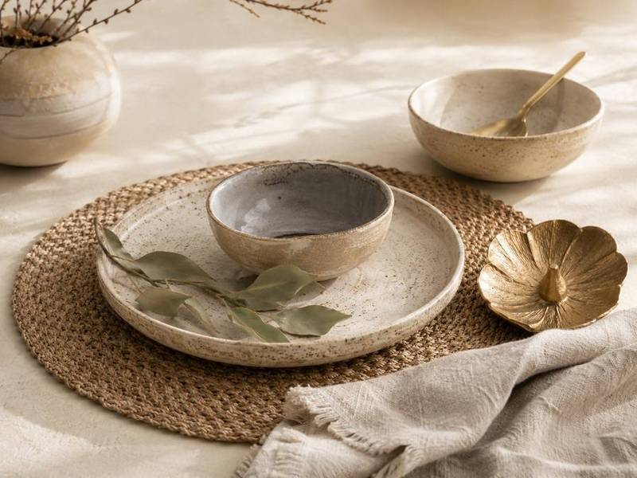
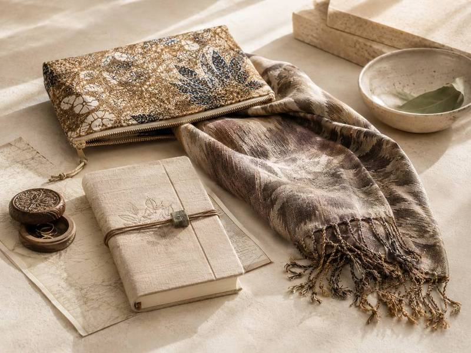
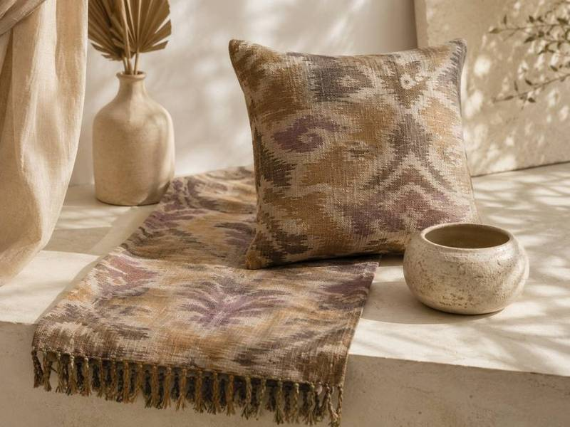
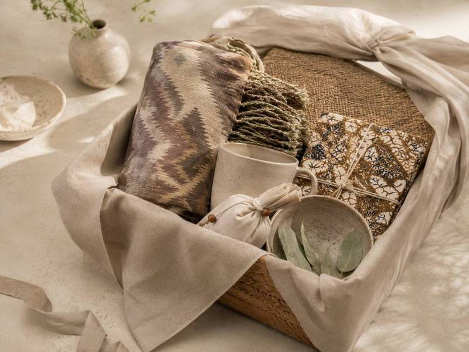
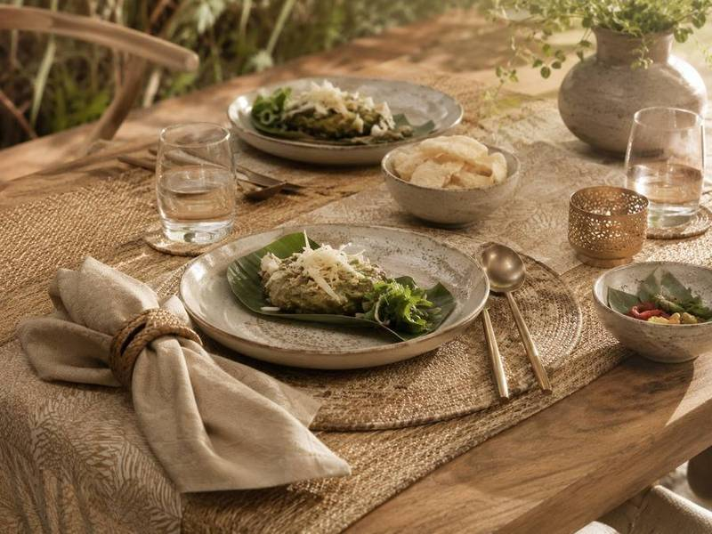

The Indonesian Journey
Where every object
carries its story.
We travel deep into Indonesia — through villages, markets, and family workshops — to find objects made with intention. Each piece arrives carrying its story, its maker, its place.
◈
Bali
Ikat & natural dye
Hand-woven textiles from the villages of Tenganan and Sidemen, dyed with indigo and earth pigments.
◈
Sumba
Hinggi & tribal weave
Ancient ikat traditions from East Sumba, where each motif tells a story of clan, ancestors, and ritual.
◈
Yogyakarta
Batik tulis masters
Hand-drawn batik from the workshops of Solo and Yogyakarta, using centuries-old wax-resist techniques.
◈
Lombok
Pottery & weave
Earthenware vessels from Penujak village and songket silk from Sukarara weavers.
◈
Flores
Ngada & Ende craft
Ikat from the Ngada highlands and hand-carved wood objects from traditional Flores villages.
◈
Java
Wayang & brass
Shadow puppets, keris handles, and cast brass objects from the royal courts of Central Java.
✦
Want to join us on a journey? We offer private and small-group trips through Indonesia's most extraordinary craft regions. Reach out to plan yours.
The Shop
Objects gathered
from the road.
Curated objects gathered from our travels — each one chosen for its craft, its story, and its singularity. Nothing here is mass-produced. Everything has a maker and a place.

Tap for story
Parang Batik Tray
IDR 485,000
Yogyakarta, Java
Parang Batik Tray
The parang motif — one of batik's oldest patterns — traces a diagonal wave said to represent the ocean's power and the courage of Javanese warriors. This tray was hand-stamped by a third-generation batik maker in the workshop district of Laweyan, Solo. The muted earth tones come from natural indigo and soga brown dye, a technique unchanged for three centuries. Each tray carries slight variation — proof it was made by hand, not machine.
IDR 485,000
Tap to close

Tap for story
Lombok Woven Rattan Bowl
IDR 680,000
Lombok, West Nusa Tenggara
Woven Rattan Bowl
In the village of Beleka, rattan weaving is passed from mother to daughter before a girl turns ten. This bowl was woven by hand using rattan harvested from the forests of central Lombok, split into fine strips and coiled in the traditional Sasak method. The tight, even weave takes a skilled weaver two full days to complete. Strong enough for fruit, beautiful enough for the table — it ages gracefully, darkening gently with use and light.
IDR 680,000
Tap to close

Tap for story
Jepara Carved Serving Board
IDR 320,000
Jepara, Central Java
Carved Serving Board
Jepara has been the wood-carving capital of Indonesia for five hundred years — its craftsmen once built the teak palaces of the Mataram sultanate. This serving board is carved from a single piece of teak, its border motif drawn freehand and chiselled by a master carver in a small family workshop off the main road. The floral medallion at the base is a signature of the Jepara school. Use it for bread, cheese, fruit — or simply let it sit on your table as the object it is.
IDR 320,000
Tap to close
◈
Craft & Textiles
Ikat, batik, hand-woven cloth from Java, Bali, Sumba & Flores
From Rp 350.000
◈
Objects
Ceramics, baskets, carved wood, brass & bronze pieces
From Rp 280.000
◈
Wearables
Scarves, sarongs, handmade jewellery from village artisans
From Rp 220.000
◈
For the Home
Cushions, runners, table pieces, vessels for the considered interior
From Rp 450.000
✦
All objects are available at Yunic Craft Shop in Bali, or by request. We ship carefully worldwide. Enquire about availability →
Gift Sets
Thoughtfully
assembled.
For someone who appreciates craft, provenance, and the beauty of the handmade. Each gift set is assembled from our travels — a curated combination, beautifully wrapped in natural materials.

The Textile Edit
A selection of hand-woven ikat and batik pieces — scarves, a small textile, a maker's card
From Rp 950.000

Artisan Table
Hand-thrown ceramics, woven placemats, and a brass object for the table
From Rp 1.200.000

The Traveller
A journey kit — batik pouch, hand-dyed scarf, small object, and a Yunic journal
From Rp 850.000

Home & Living
Cushion cover, table runner, and a handmade vessel — all from one region
From Rp 1.500.000

Bespoke Set
We curate a gift set to your budget and the recipient — tell us about them
By arrangement

Dining Experience
A gift voucher for Yunic Dining — a private Indonesian table for two
From Rp 2.000.000
✦
All gift sets include a handwritten card and are wrapped in natural cloth. We also create corporate gift sets for companies and hospitality groups. Get in touch →
The Journal
From the road,
in pictures.
This is where we share the journeys — the villages, the weavers, the markets, the meals. Photos and short films from the places where we find what we bring back to you.
Sumba, East Indonesia
The women who weave the ancestors into cloth
In the village of Prailiu, ikat is not craft — it is memory, genealogy, and ritual woven into thread.
March 2025
Lombok, Indonesia
Penujak: the village that shapes earth into form
Three generations of potters, working with river clay and open fires, making vessels that breathe.
January 2025
Yogyakarta, Java
A long breakfast in the batik quarter
Before the workshop opens, there is always a meal — gudeg, tofu, and sweet tea in a courtyard.
November 2024
📷
This section will be updated with photos and videos from our travels.
Each journey brings new stories.